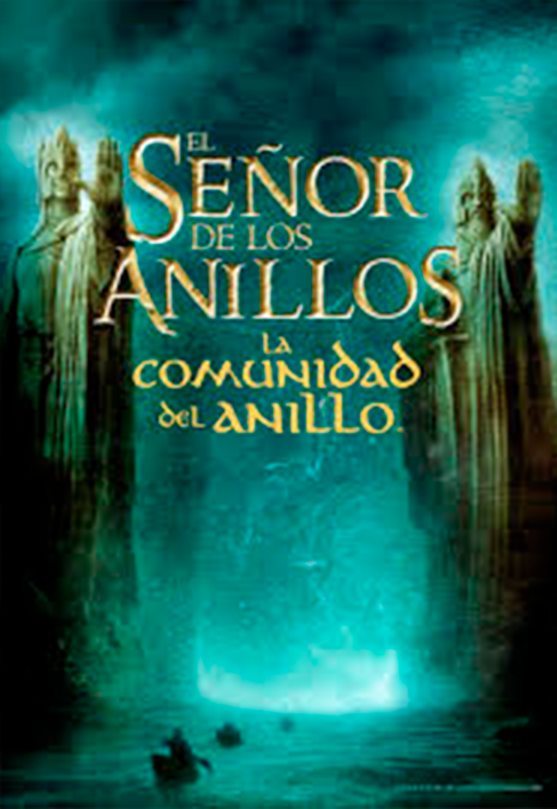
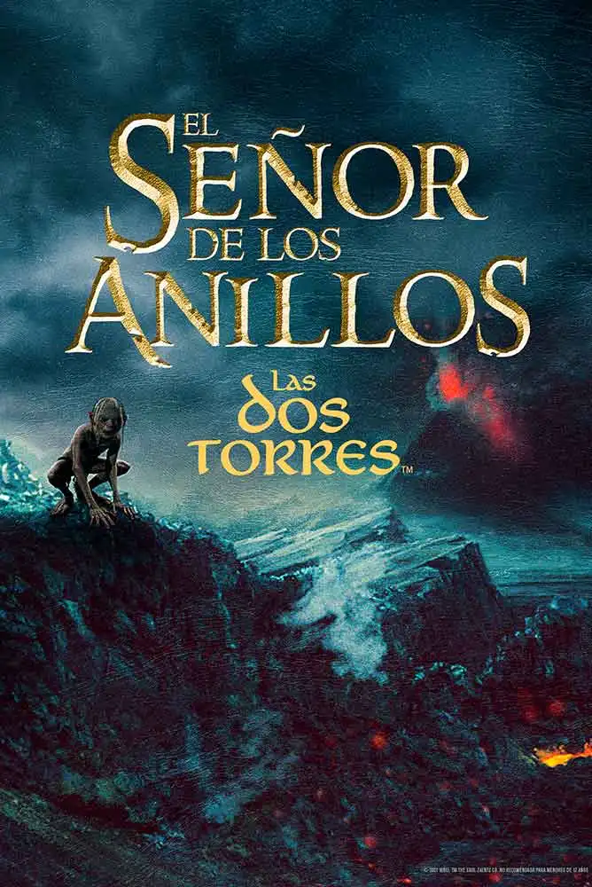
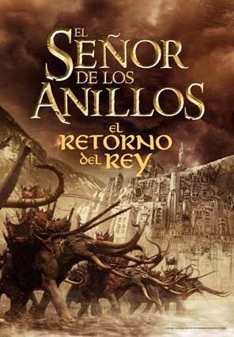

"La Comunidad del Anillo" sigue a Frodo y sus compañeros mientras se embarcan en
una misión para destruir el Anillo Único y evitar que caiga en manos de Sauron, el Señor Oscuro.

"Las Dos Torres" es la continuación de "El Señor de los Anillos". En este libro, Frodo y Sam avanzan hacia Mordor mientras Aragorn y sus compañeros luchan por proteger Rohan y rescatar a sus amigos capturados por los orcos.
Conseguilo
"El Retorno del Rey" concluye la trilogía de "El Señor de los Anillos", centrando en la batalla final por el destino de la Tierra Media, donde Frodo lucha por destruir el Anillo Único y Aragorn emerge como el rey legítimo de Gondor.
Conseguilo